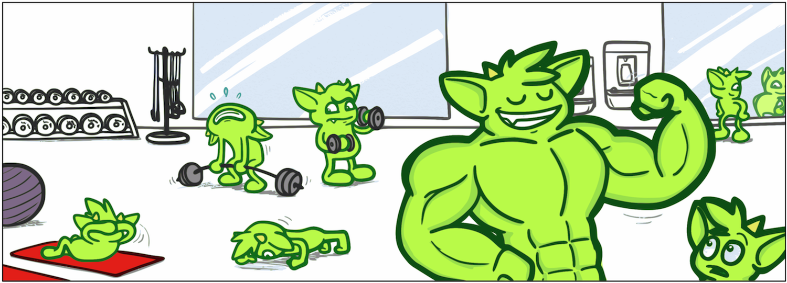

Apache TinkerPop 是一个开源的图计算框架。在这其中，TinkerPop 代表了很多的功能和技术，并且在它广阔的生态系统下还另外扩展了第三方贡献图库和系统的世界。TinkerPop 的生态系统对于新手来说可能是复杂的，尤其是第一次浏览参考文档的时候。
所以，你要从哪里开始使用 TinkerPop 呢？你如何快速入门并且获得成果？
Gremlin，TinkerPop 世界里最知名的公民，让它来帮助你完成入门，之后，你也可以使用 TinkerPop 构建图应用程序了。

认识 Gremlin

Gremlin 可以帮助你浏览一个图中的点和边。他本质上是你用来查询图数据库的语言，就和 SQL 是用来查询关系型数据库的语言一样。为了告诉 Gremlin 他应该如何「遍历」图（也就是你想做的查询）你需要一种方法来用他能明白的语言下达命令，这个语言当然被叫做「Gremlin」。对于这个任务，你需要一个 TinkerPop 的最重要的工具：Gremlin 控制台。
你现在可能还不知道点和边是什么，这会在后文中进行介绍，不过请允许我带你先认识一下 Gremlin 控制台，让你能够了解这个可以帮助你学习体验的工具。
我们来下载控制台然后解压并启动它：
1 | $ unzip apache-tinkerpop-gremlin-console-3.3.0-bin.zip |
Gremlin 控制台是个 REPL 环境，它提供了很 nice 的方式来学习 Gremlin，因为你可以在输入代码后立刻得到反馈。这消除了需要「创建项目」才能尝试的复杂方式。控制台不仅仅是用来「入门」的，你将发现你会使用它来进行和 TinkerPop 相关的各种活动，比如加载数据、管理图、编写复杂的遍历等等。
为了让 Gremlin 遍历一个图，你需要一个 Graph 实例，它保存着图的结构和数据。TinkerPop 是不同图数据库和图处理器之上的图抽象层，所以控制台中有很多可以实例化的实例供你选择。开始时最好的 Grahp 实例当然是 TinkerGraph。TinkerGraph 是一个快速、运行于内存的图数据库，有少量配置项，使其成为初学者不错的选择。
TinkerGraph 不仅仅是提供给初学者的玩具。它在以下几个场景也是非常有用的：分析从大图中取出的子图时，使用不会有太大变化的静态图时，编写单元测试和其他能适应内存的图用例时。
待续